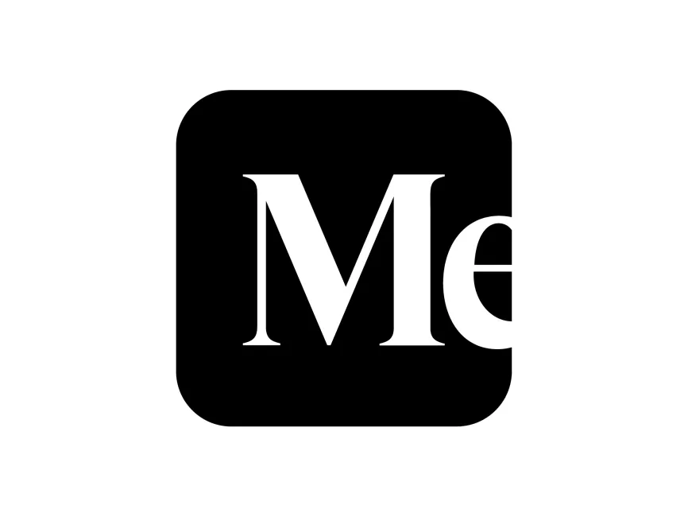

Md Abrar Hasin Parash
Life Science Researcher & Educator
.jpg)
Research Publications
Listed in as the most recent first.
Heavy metals in dates (Phoenix dactylifera L.) collected from Medina and Dhaka City markets, and assessment of human health risk
Constantly eaten foods (such as fruits, vegetables, cereal, etc.) that contain excessive concentrations of heavy metals pose a major risk to human health and deplete the food supply. The amounts of heavy metals in different date varietiies were measured after they were collected from three wholesale markets in the major cities of Dhaka, Bangladesh, and Medina.
See more ›››

Heavy Metals in Mariam and Dabash Date Fruits (Phoenix dactylifera L.) Collected from Dhaka City, Bangladesh and Associated Assessment of Public Health Risk
Heavy metals have become a prominent concern as they continue to emerge in our environment and food chain. This study was conducted to assess the contamination levels of specific heavy metals in two commonly consumed date fruit varieties, Mariam and Dabash, in Bangladesh during the month of Ramadan.
See more ›››
Article Publications
Dimensions of Cognitions
What would it feel like to go into the second degree or third degree of meta-cognition? Too much load? Overthinking the phenomenon of overthinking?
See more ›››

Soil Mycology: Leveraging Fungal Mechanisms to Address Nutrient Deficiencies and Enhance Soil Fertility in Bangladesh
N.B.: This article was written during July-August of 2025 as a university course work - Seminar SWE 412
See more ›››
Objectivity- The Truth, The Absolute
The question I want to ask is what is the amount of subjectivity, the number of observations, the depth of experience do we need to reach a point of objectivity?
See more ›››
Paint It, Black
I was listening to the song produced by The Rolling Stone, album Hot Rocks (1964-1971).
See more ›››
Migraine: feels like if I see one more photon, my head will burst!
When I first found out I had migraine, it was a quite a bitter experience, and my parents held well at the surface, but I know they were shaken to core.
The situation went like this- my 2nd year classes began in the day shift from 1st July, 2019. Everyday I have to get on the bus at 4:45 pm or later after college and returned home usually at 7 or 8 pm!
See more ›››